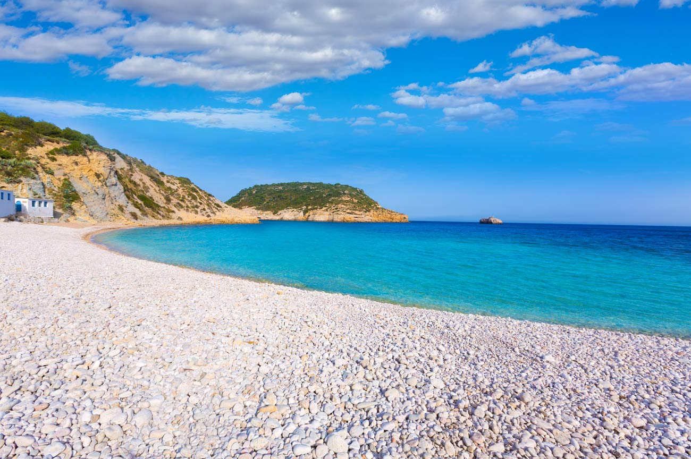
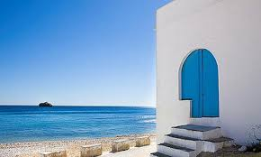
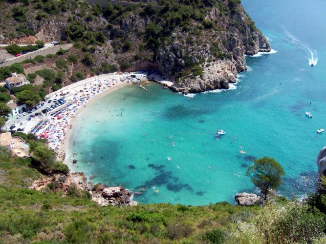
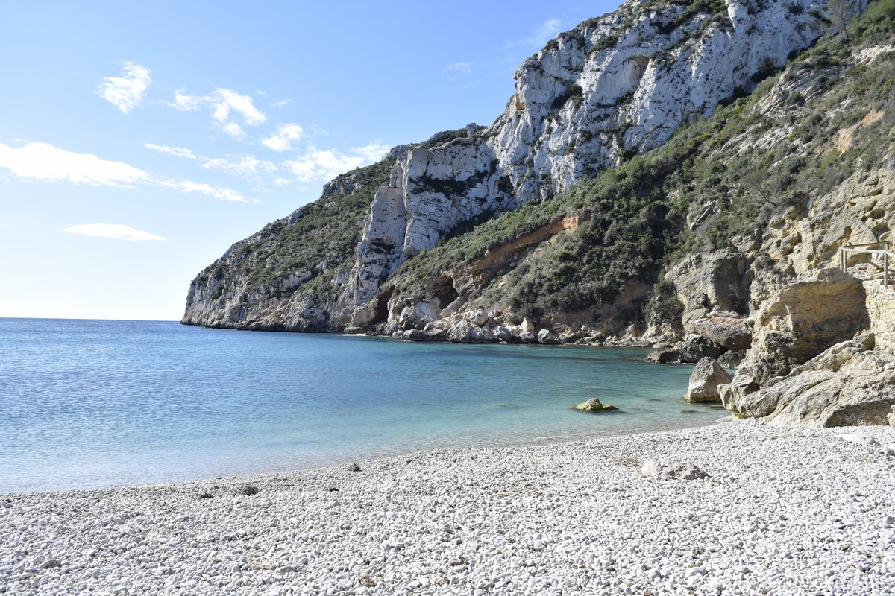
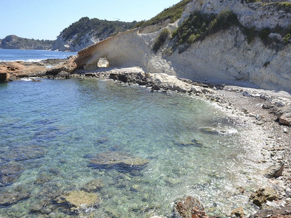
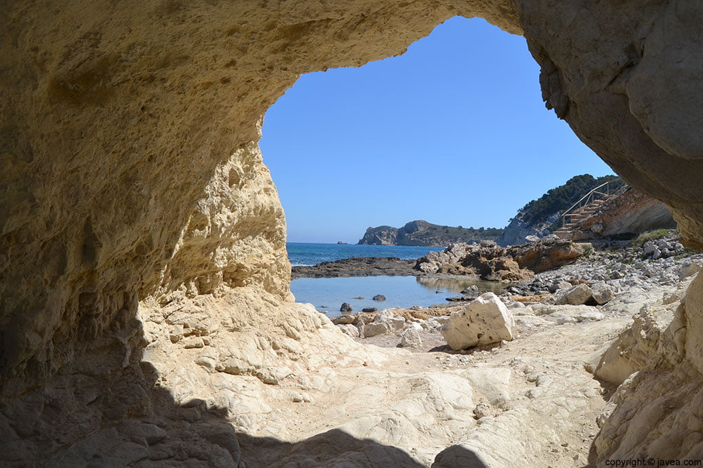
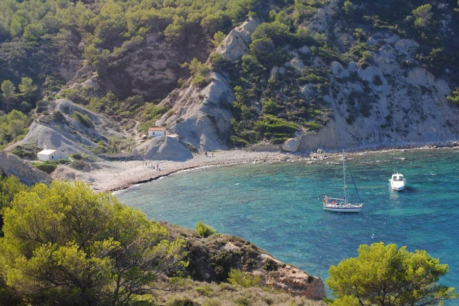

Calas
|  | Cala rústica de grava, bolos y roca situada entre el Cap Prim y el Cap Negre. Se puede acceder, tanto en coche desde la carretera del Cabo de la Nao, como a pie desde el Mirador de la Cruz del Portitxol. Frente a la cala, encontramos la Isla del Portitxol (300 metros) de gran interés botánico y arqueológico. Altamente recomendada para la práctica del submarinismo. Su nivel de ocupación es medio y su longitud es de 900 m. |
| Esta cala se caracteriza por sus numerosas casitas de pescadores con fachadas blancas y puertas pintadas de azul, las que convierten cada verano esta cala en uno de los lugares más fotografiados del Mediterráneo. La famosa foto en la puerta azul se hizo conocida en Instagram hasta el punto que la gente viaja hasta el lugar únicamente para conseguir la foto. |  |
|  | Cala rústica de aguas cristalinas, ideal para el submarinismo, está situada en la zona más meridional de Xàbia. Se accede a ella a través de una carretera del mismo nombre, que se toma desde la Ctra. Cabo de la Nao, a unos 2 km aproximadamente antes de llegar a él. Desde la misma carretera de la Granadella se puede acceder al Mirador y desde el parking de la cala empieza la ruta de senderismo del Castell de la Granadella. Su nivel de ocupación es alto y su longitud es de 160 m. |
| Es un lugar tranquilo aunque está bastante concurrido, la Granadella es una cala casi virgen de aguas cristalinas de color esmeralda, ideal para hacer snorkel o bucear e iniciar o concluir una ruta en kayak. A esto lo acompañan que hay restaurantes justo al lado de la cala. |  |
|  | Compuesta por dos calitas contiguas, conectadas por litoral de piedra. Su nombre deriva del color blanquecino de las rocas de sus acantilados. Ocupación media |
|
Caleta I: Cala rústica de grava y roca situada al final de la Avda. Ultramar. Tiene acceso en coche y el último tramo se realiza por un pequeño paseo marítimo. Desde ella se accede al Mirador de Cala Blanca. Longitud de 80 m. Caleta II: Se caracteriza por su brazo de piedra tosca que sale hacia el mar a modo de barrera, sus aguas suelen ser tranquilas y cristalinas. Su acceso se realiza a pie desde la I Caleta o desde el Mirador de les Caletes. Tiene una longitud de unos 40 m. |
 |
| |
Pequeña cala virgen de grava y bolos situada en la vertiente norte del Cap Prim o de Sant Martí. El acceso a esta cala se realiza a pie desde el Mirador de la Cruz del Portitxol, a través de una senda que discurre junto a una naturaleza original e intacta. Antiguamente era el mejor sitio para los sardinales, redes finas que se calaban dos veces al día, a la salida y puesta del sol, de ahí el origen de su nombre. Su longitud es de 200 m. aproximadamente y su nivel de ocupación es bajo. |
| Su difícil acceso hace que haya muy poca gente, puesto que no se puede aparcar en la playa. Por ello la mayoría de gente que va es por el mar, haciendo que siempre tenga algún barco anclado. En ella encontramos arribazones de posidonia en la orilla ya que al ser una cala natural no los quitan, estos evitan la erosión de la playa y proporcionan salud a los fondos marinos, puesto que son hábitat de numerosas especies animales. |  |